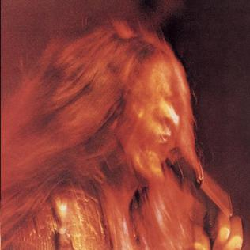

Day 118

Janis Joplin ◆ Kozmic Blues ◆ I Got Dem Ol’ Kozmic Blues Again Mama! ◆ 1969
今天回归初心，再发一首 Janis Joplin。今天开车的时候听到 Janis 的歌，有感而发。志怪故事里鬼魂幽灵大多不能碰到现实里的人物，只有怨气冲天、特别强大的，才能凝实到能影响现实。Janis 的歌声就强大到有如实质，每一次都能能轻易穿过我的身体，直接碰触到心灵。我从来没见过别的歌手或是乐器能做到这点。
说到这里，人类是如此社会性的动物，以至于我们对人类的脸，人类的声音，人类的故事敏感胜于他物千百倍。我们会从各种奇怪的地方看出脸来，而我从来没在器乐声里感受到过能和人声匹敌的感染力。
我本来是想学日语，好能听懂日文歌的。但我现在不着急了，一方面是学日语遥遥无期，另一方面是我发现听不懂反而让我能把日语歌手当作人声乐器听，不用在意歌词，感觉也不错。当然，能听懂歌词会是另一种享受。但是听不懂也是一种享受，而且是听得懂歌词的人享受不到的体验。
今天其实是听到 A Woman Left Lonely 和 Little Gril Blue 有感而发的，但是这两首都写过了。我快要用完能发的 Janis 的歌了www
Time keeps movin’ on,
Friends they turn away.
I keep movin’ on
But I never found out why
I keep pushing so hard the dream,
I keep tryin’ to make it right
Through another lonely day, whoaa.
Dawn has come at last,
Twenty-five years, honey just in one night, oh yeah.
Well, I’m twenty-five years older now
So I know we can’t be right
And I’m no better, baby,
And I can’t help you no more
Than I did when just a girl.
Aww, but it don’t make no difference, baby, no, no,
And I know that I could always try.
It don’t make no difference, baby, yeah,
I better hold it now,
I better need it, yeah,
I better use it till the day I die, whoa.
Don’t expect any answers, dear,
For I know that they don’t come with age, no, no.
Well, ain’t never gonna love you any better, babe.
And I’m never gonna love you right,
So you’d better take it now, right now.
Oh! But it don’t make no difference, babe, hey,
And I know that I could always try.
There’s a fire inside everyone of us,
You’d better need it now,
I got to hold it, yeah,
I better use it till the day I die.
Don’t make no difference, babe, no, no, no,
And it never ever will, hey,
I wanna talk about a little bit of loving, yeah,
I got to hold it, baby,
I’m gonna need it now,
I’m gonna use it, say, aaaah,
Don’t make no difference, babe, yeah,
Ah honey, I’d hate to be the one.
I said you’re gonna live your life
And you’re gonna love your life
Or babe, someday you’re gonna have to cry.
Yes indeed, yes indeed, yes indeed,
Ah, baby, yes indeed.
I said you, you’re always gonna hurt me,
I said you’re always gonna let me down,
I said everywhere, every day, every day
And every way, every way.
Ah honey won’t you hold on to what’s gonna move.
I said it’s gonna disappear when you turn your back.
I said you know it ain’t gonna be there
When you wanna reach out and grab on.
Whoa babe,
Whoa babe,
Whoa babe,
Oh but keep truckin’ on.
Whoa yeah,
Whoa yeah,
Whoa yeah,
Whoa,
Whoa,
Whoa,
Whoa,
Whoa ...
Source: AZ Lyrics